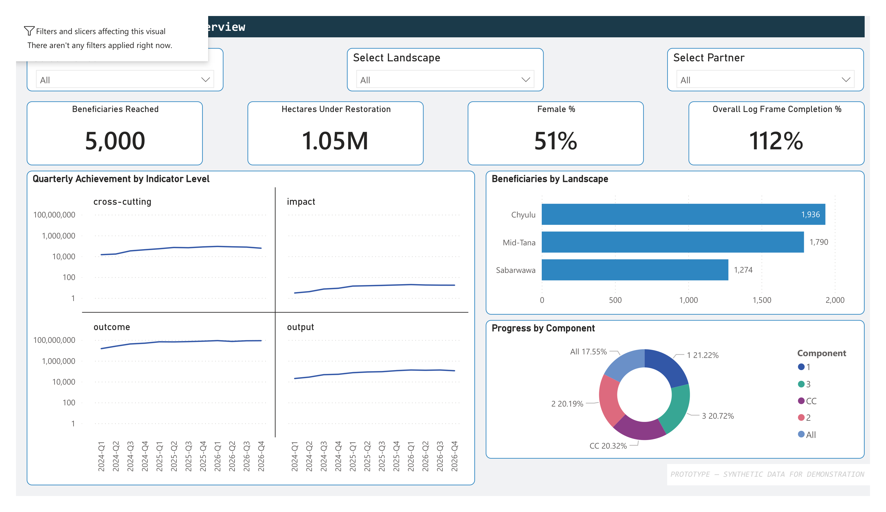
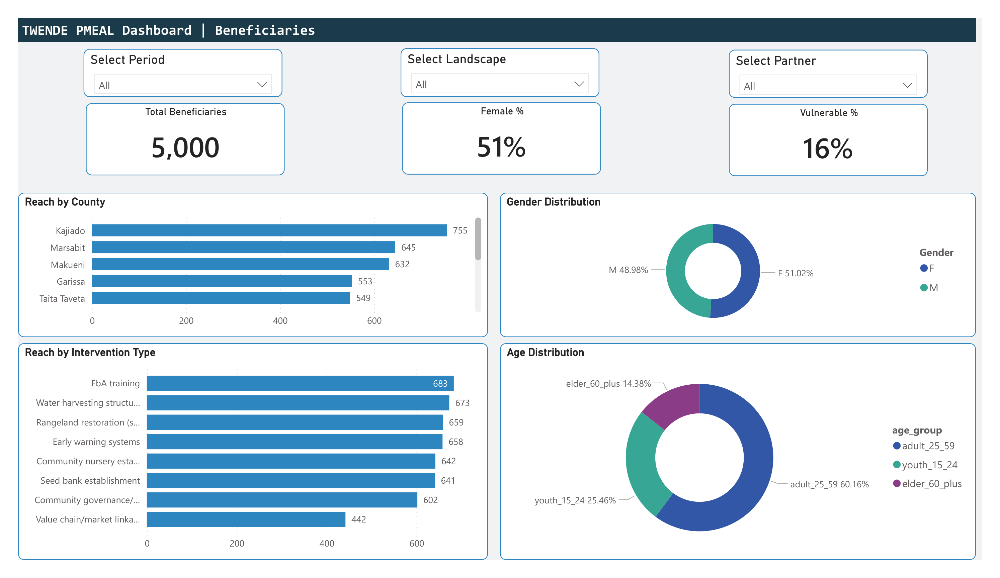
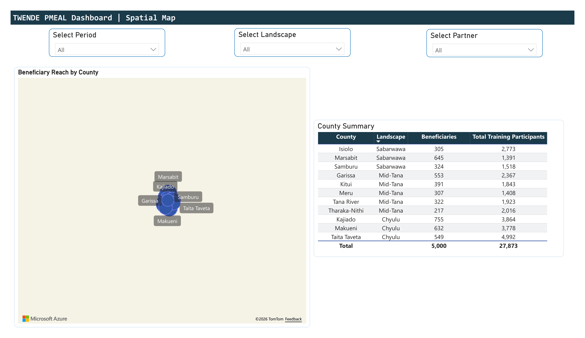
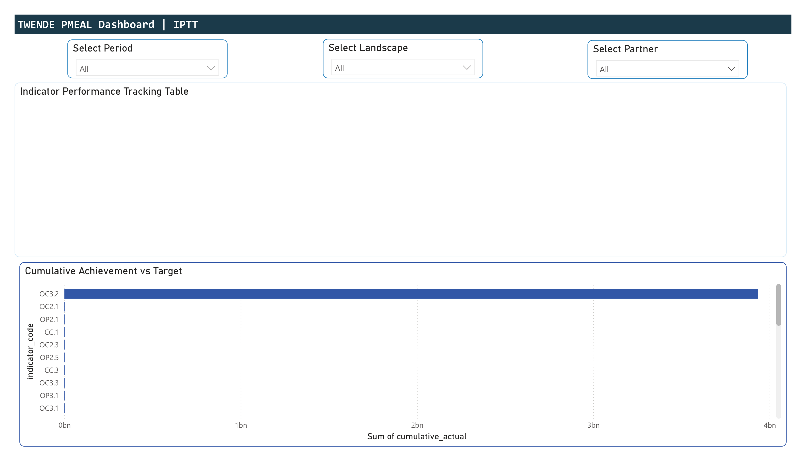
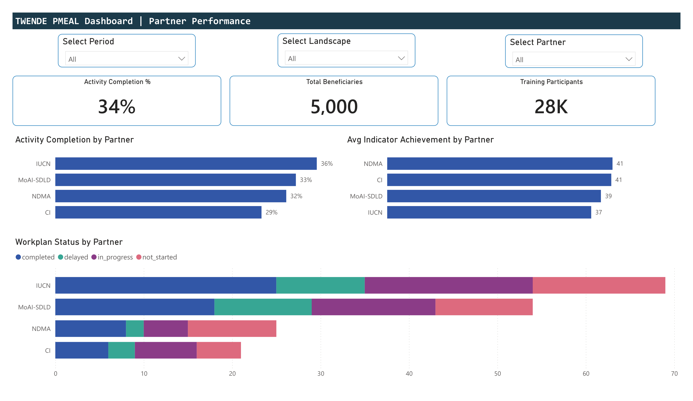
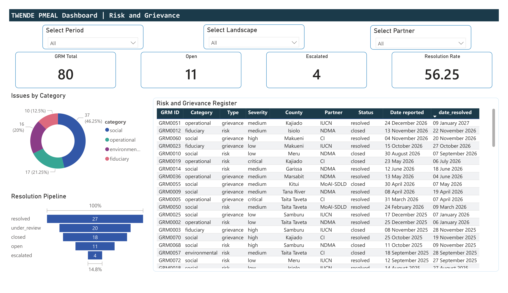

What this demonstrates
The TWENDE Project generates monitoring data across four implementing partners using KoBoToolbox, SurveyCTO, and Excel, but these are not integrated within a unified framework. This prototype demonstrates the proposed PMEAL system architecture: a star-schema data model with 6 dimension tables and 5 fact tables, feeding 6 dashboard pages with GIS integration and differentiated user access.
- Star schema: dim_landscape, dim_county, dim_partner, dim_indicator, dim_period, dim_intervention
- Fact tables: achievement (1,525 rows), beneficiary (5,000), training (400), workplan (180), GRM (80)
- Global slicers (period, landscape, partner) filter across all pages
- Row-level security designed for 5 user tiers
- GIS integration via Azure Maps with county-level bubble visualisation
Dashboard pages
Each page maps to a PMEAL module. Click any screenshot to view full size.

Project Overview
KPI cards for beneficiaries reached (5,000), hectares under restoration (1.05M), female percentage (51%), and overall log frame completion (112%). Quarterly achievement trend lines by indicator level. Beneficiaries by landscape bar chart and progress-by-component donut.

Beneficiary Database
Individual-level tracking across 5,000 records. Reach by county, gender distribution (51% female), age group breakdown (60% adult, 25% youth, 15% elder), vulnerability status (16%), and reach by intervention type across all eight categories.

Spatial Map
Azure Maps visualisation plotting beneficiary reach as proportional bubbles on county centroids across Kenya's ASAL region. County summary table showing beneficiary count and training participant totals grouped by landscape (Chyulu, Mid-Tana, Sabarwawa).

Indicator Performance Tracking Table (IPTT)
Cumulative achievement versus target for each log frame indicator (32 indicators across 3 components + cross-cutting). Designed for traffic-light conditional formatting enabling the MEAL team to identify on-track, at-risk, and behind-schedule indicators.

Partner Performance
Activity completion and average indicator achievement compared across all four implementing partners (IUCN, MoAI-SDLD, NDMA, Conservation International). Workplan status stacked bar chart showing completed, in-progress, delayed, and not-started activities per partner.

Risk and Grievance (GRM)
80 cases tracked across four categories (social, operational, environmental, fiduciary). Resolution pipeline from open through escalated to resolved. Full register table with GRM ID, severity, county, partner, status, and reporting/resolution dates.